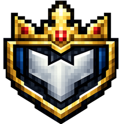
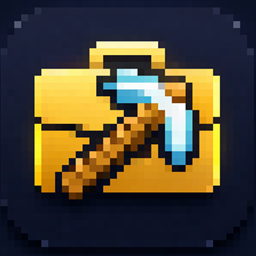
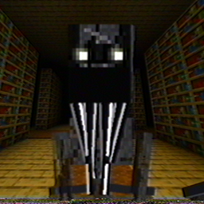
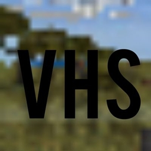

Shader pack
100K downloads
Pasta Shaders
A color-heavy shader pack for Bedrock. I wanted the world to feel warmer and more alive without making everything harder to read.
Open on CurseForgeI’m Pasta. Most of my projects start as a small idea, then turn into an addon, script, shader, UI experiment, or something harder to label. I bounce between design, scripting, visuals, and assets, then make sure the whole thing works for other players.
These are the projects I would show first. Some are practical server tools, some are visual packs, and some exist because making Minecraft feel slightly wrong is fun.
A color-heavy shader pack for Bedrock. I wanted the world to feel warmer and more alive without making everything harder to read.
Open on CurseForgeA horror addon built around making normal Minecraft feel wrong in small ways. It grew into my biggest release and the project people seem to know me for most.
Open on CurseForgeA chest shop system for Bedrock servers. The point is simple: set up a shop quickly, make the interaction obvious, and stay out of the player’s way.
Open on CurseForge
My take on factions for Bedrock. It brings claims, PvP, progression, economy, diplomacy, and admin tools into one addon made for multiplayer servers.
Open on CurseForge
A simple jobs system for servers that want player roles and repeatable progression without turning the whole game into a spreadsheet.
Open on CurseForge
A stranger, less stable version of survival Minecraft. The fun part is never being completely sure what the world is about to do.
Open on CurseForge
A VHS-style screen effect for Bedrock, mostly made for horror packs that need the footage to feel older and rougher.
Open on CurseForgeI rarely work on one isolated piece. The code, UI, models, textures, and presentation usually need to make sense together, so I move between them as the project needs it.
Gameplay systems, utilities, progression, interfaces, server features, and the logic that keeps the project working once real players get involved.
Shaders, textures, HUDs, color work, and the small visual decisions that stop a project from feeling like a pile of unrelated assets.
Blockbench models, textures, icons, and supporting assets when the idea needs more than code to make sense in game.
Testing, fixing rough edges, packaging files, making screenshots, and getting the project into a state where somebody else can install it without needing me there.
I like the part where a rough idea stops being hypothetical. That usually means a lot of testing, changing my mind, rebuilding pieces, and eventually getting something into players’ hands.
Some are useful, some are weird, and some are both. I care about what the project feels like once another player is using it, not just whether the feature technically works.
Figure out what is worth building before I spend time decorating the idea.
Build enough of the system to see what feels good, what is awkward, and what needs to change.
Bring the visuals, UI, assets, feedback, and mechanics into the same language.
Test the release, fix the annoying parts, package it, and publish it.
If you have a Bedrock project, commission, collaboration, or studio role in mind, send me a message on Discord. That is the easiest place to reach me.